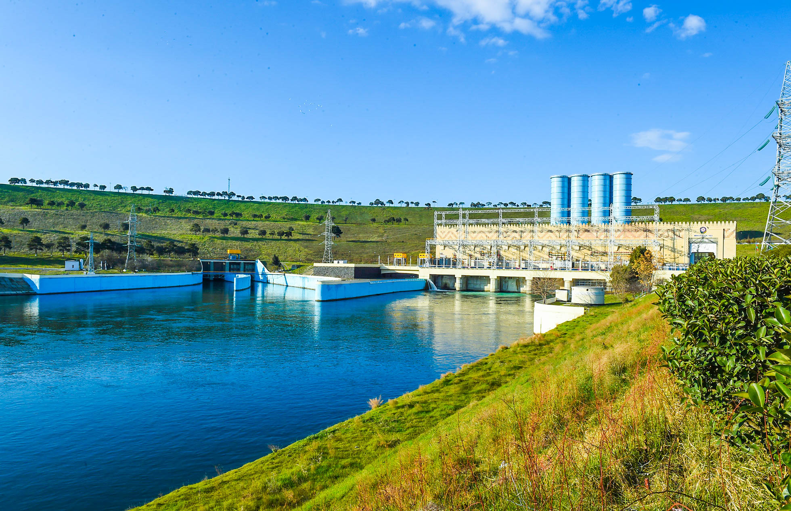
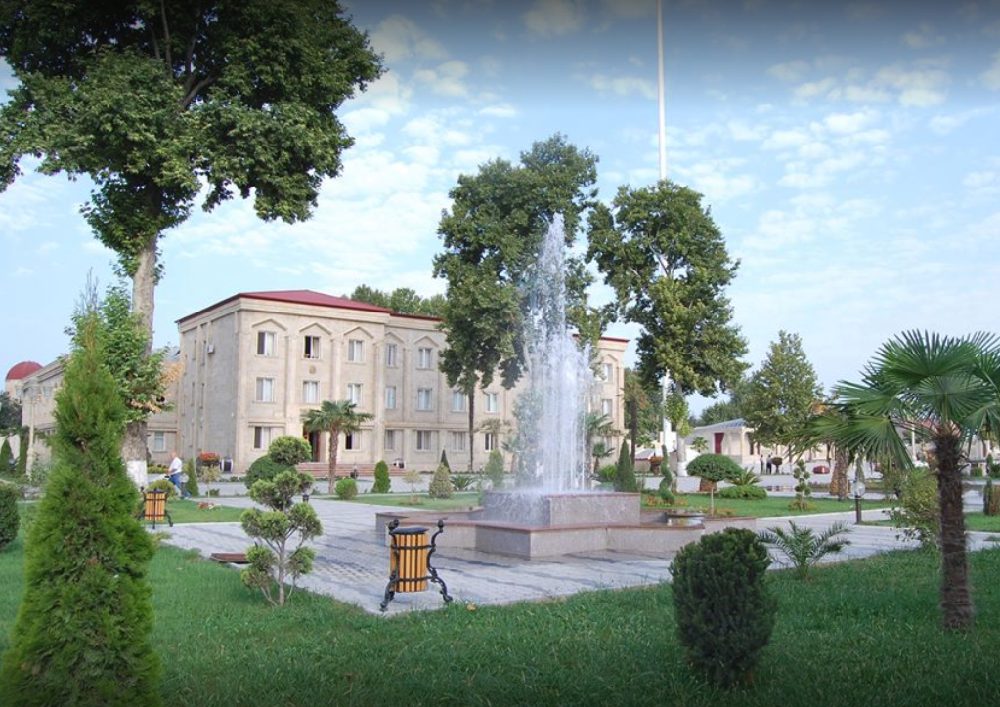
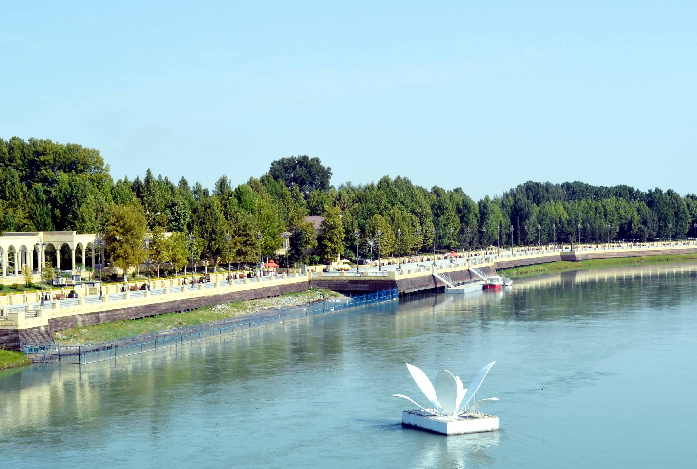

SALYAN rayonu Azərbaycanın ən gözəl rayonlarından biridir. Bakıdan Salyan rayonunun mərkəzinədək məsafə 126 km-dir.Rayonun ərazisi Kür-Araz ovalığında Muğan və Cənub-Şərqi Şirvan düzlərində yerləşir.Tirə və təpəliklər Babazanlı, Xıdırlı, Bəndovan və s. var.Ərazinin çox hissəsi okean səviyyəsindən 28 metrə qədər aşağıda yerləşir. Neogen və Antropogen çöküntüləri yayılmışdır.Palçıq vulkanları Qalmas, Xıdırlı, Babazanlı və s . var.Rayon ərazisindən Kür çayı axır. Onun keçmiş qolu olan Bala Kürdən suvarmada geniş istifadə edilir.Akuşa çayının axmazlarında nadir və nəsli kəsilməkdə olan Azərbaycanın, o cümlədən bir sıra ölkələrin Qırmızı Kitabına salınmış şanagülə bitir.Şirvan Milli Parkının əsas hissəsi Salyan ərazisində yerləşir.

Mingəçevir — Azərbaycanın əhali sayı etibarı ilə dördüncü böyük şəhəridir. 4 fevral 1954-cü ildə respublika tabeli şəhər kateqoriyasına keçmişdir. Kür çayının sahillərində yerləşir. Mingəçevir şəhəri şərq, cənub və qərb tərəfdən Yevlax rayonu, şimaldan isə Mingəçevir Su anbarı ilə həmsərhəddir. Mingəçevir şəhəri Kür çayının üzərində su elektrik stansiyasının tikintisi ilə bağlı salınmışdır. 11 noyabr 1948-ci ildə şəhər statusu almışdır. Bakıdan 323 km məsafədə yerləşir.Respublika miqyaslı hava limanı 30 km məsafədə Yevlax rayonunda, beynəlxalq miqyaslı hava limanı Gəncə şəhərində 80 km məsafədə yerləşir. Coğrafi cəhətdən şəhər respublikanın mərkəzində Kür çayının hər iki sahilində salınmışdır. Mingəçevir su anbarı şəhərin şimal-qərbində 3 km məsafədə yerləşir. Su anbarının həcmi 15,7 milyard kub metrdir.

Bərdə rayonu — Azərbaycan Respublikasında inzibati – ərazi vahididir. Rayonda 73 müəssisə, 32 məktəbəqədər uşaq müəssisəsi, 76 məktəb, 16 tibb müəssisəsi, 205 mədəniyyət ocağı yerləşir. Rayon ərazisindən Tərtər və Xaçın, şimal sərhədi boyu isə Kür çayları keçir. Tərtərçay öz mənbəyini Kiçik Qafqazda 3120 m yüksəklikdən götürür. Tərtərçayın 31 qolu var. Xaçınçay Kiçik Qafqazın Hacı-Yurd (2397 m), Uyuxlu (2316 m), Çiçəkli (2343 m), Alla-Qaya (2585 m) dağlarının bulaqlarından formalaşır. Çayın əsas 12 qolu vardır. 1930-cu ildə təşkil edilmişdir. Qarabağ düzündədir. Sahəsi 957 km², əhalisi 138,1 min nəfərdir. (01.01.2006). Mərkəzi Bərdə şəhəridir. Səthi az meylli və dalğalı düzənlikdən ibarətdir. Antropogen sisteminin çöküntüləri ilə örtülüdür. Gil, çınqıl və qum yataqları var.

Yevlax — Azərbaycanda şəhərdir. 1939-cu ildə rayon tabeli şəhər statusu almışdır.6 yanvar 1965-ci ildən respublika tabeli şəhərdir. 2019-cu ildə aparılmış siyahıya almanın yekunlarına əsasən Yevlax rayonunun əhalisi 128,700 nəfərdir.Onun 69,798 nəfəri şəhər əhalisidir. Yevlax coğrafi mövqeyinə görə Azərbaycanın mərkəzində mühüm kommunikasiyaların kəsişməsində yerləşməklə qədim yaşayış məskənlərindən biridir. Rayon kimi 1935-ci ilin fevral ayından fəaliyyət göstərir. Yevlax eyni zamanda respublika tabeli şəhərdir. Yevlax rayonu Ağdaş, Bərdə, Tərtər, Goranboy, Samux, Qax, Şəki rayonları ilə həmsərhəddir. Rayon 1 şəhər, 3 qəsəbə və 46 kənddən ibarətdir.